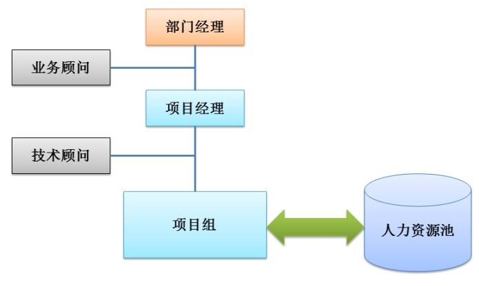

金蝶BOS-EAS二次开发
BOS，Business Operation System，业务操作系统，是金蝶融合多年的企业应用软件的经验以及MDA理念研发新一代技术平台，是金蝶公司全新的管理软件开发工具和管理集成平台。金蝶BOS提供了基于模型驱动架构（MDA）的开发模式和相关的工具，成功的解决了企业应用软件在开发、实施和维护过程中的质量、周期、成本、风险等方面的问题，并使企业应用软件能够满足企业管理行业特性、企业个性化和持续完善的要求，对于企业应用软件在行业应用开发和维护、实施带来了全新的应用模式和革命。
金蝶EAS BOS提供的集成管理平台，使企业应用可以集企业门户(Portal)、办公自动化(OA)、企业资源管理（ERP）、工作流（Workflow）以及业务重组（BPR）于一体，对于企业的团队协作、业务支持、管理控制、决策分析、商务智能以及企业信息实时化提供全面的支持。
汉顺的技术团队拥有多年的ERP业务经验，同时在相关技术方面有着坚实的积累。在金蝶BOS-EAS二次开发方面，团队的骨干成员也有数年经验。如今，汉顺在金蝶业务方面的管理人员不断扩充，管理机制不断完善，不断为金蝶及金蝶客户提供更低成本、更低风险的优质服务。
